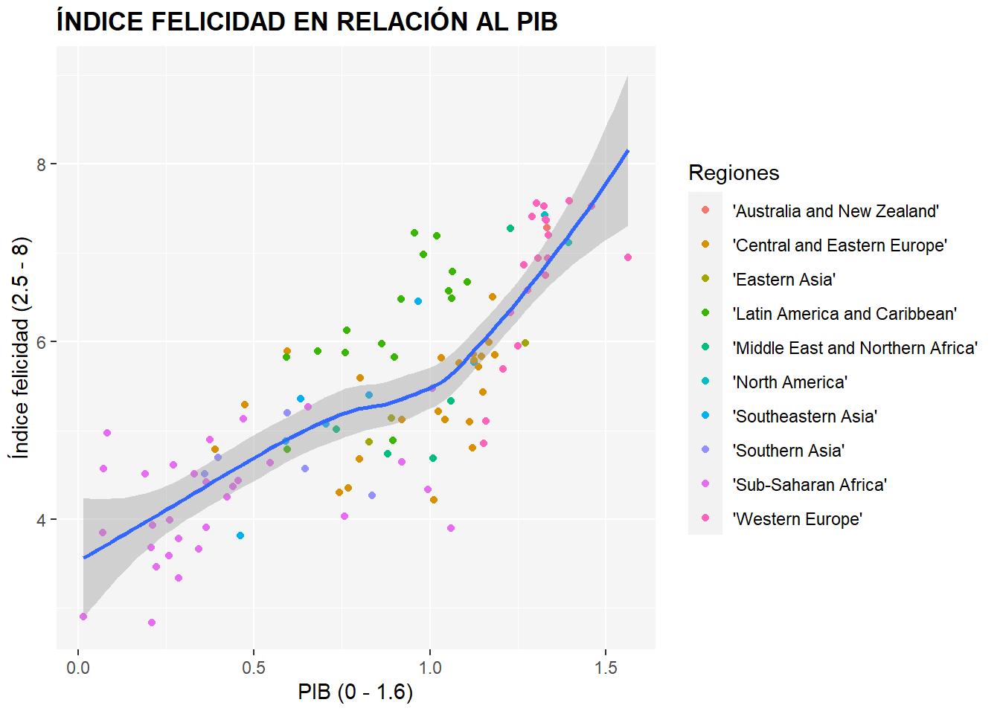
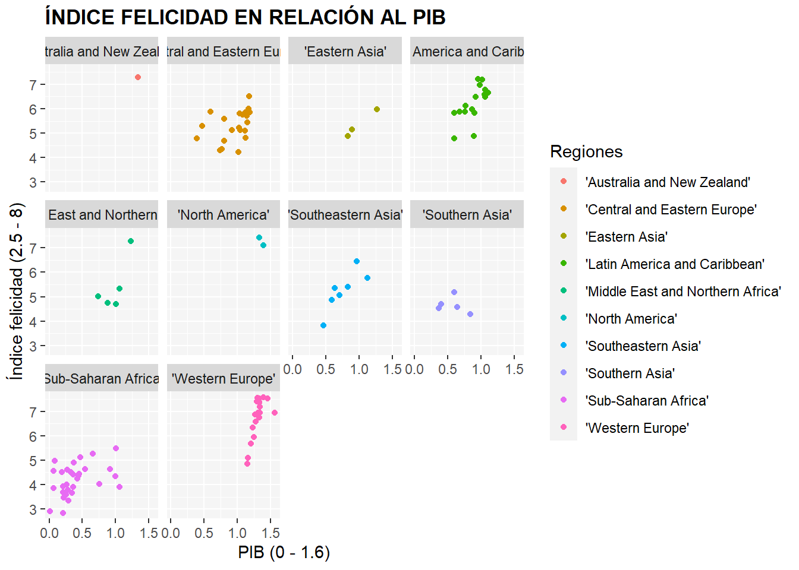
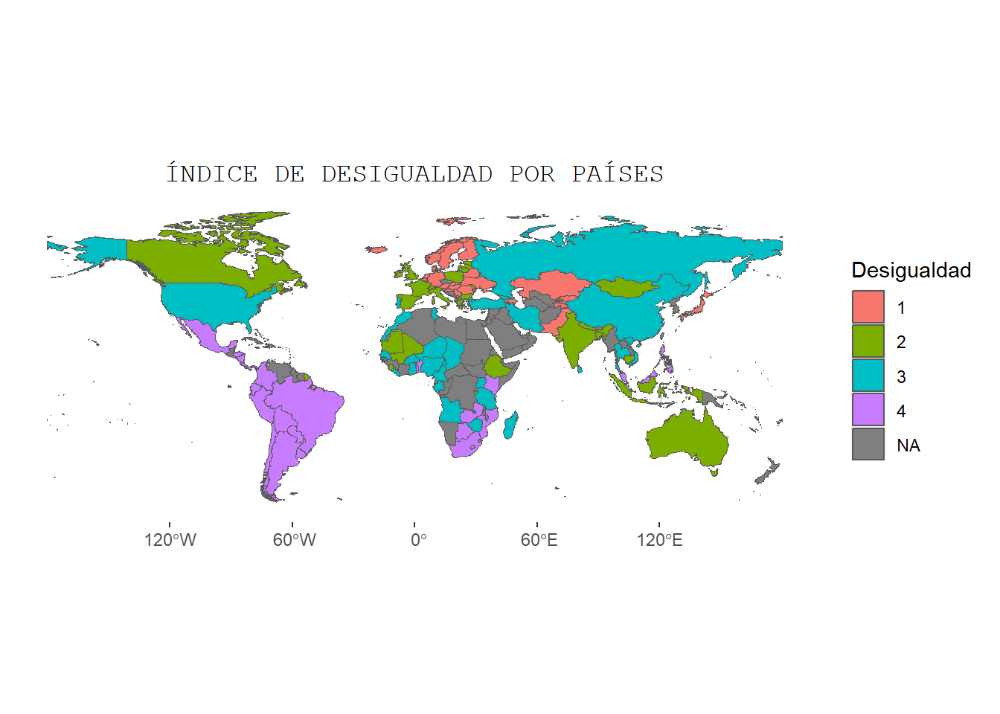
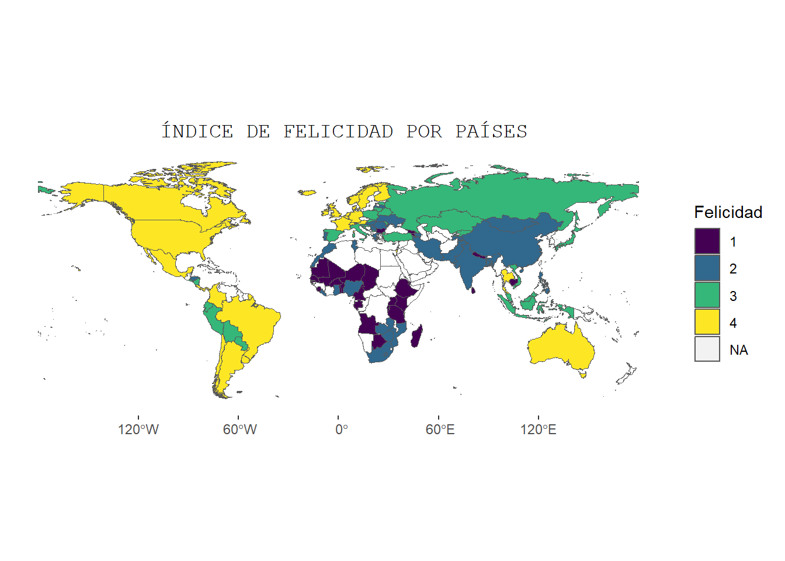

Cómo el nivel de ingresos afectan a nuestra felicidad.
Felicidad
PIB
Desigualdad
Autor/a
Vera Monteagudo (vemonse@alumni.uv.es)
Fecha de publicación
8 de enero de 2023
Introducción
¿Cómo somos de felices?, ¿Cómo afectan los ingresos, el PIB o la desigualdad en la percepción que tenemos de felicidad?. Pues precisamente de esto es de lo que vamos a hablar aquí, veremos si exsiste una fórmula precisa de poder medir las causas de la felicidad de la gente… o no. Veremos también las correlaciones entre las felicidad y los ingresos, así como la correlación con la desigualdad, y si esto es determinante para poder sacar una conclusión sólida acerca de los niveles de felicidad.
Los datos que hemos utilizado para este trabajo provienen de la página Kaggle. Esta pagina es una comunidad online de profesionales y científicos de datos. Página recomendable para buscar datos acerca de temas relacionados con R. Por si la queréis usar para hacer otros trabajos pincha aquí.
Vamos a utilizar datos de un paquete dentro de Kaggle .La página web del paquete está aquí.
El dataset contiene observaciones sobre un conjunto de datos que reflejan la relación entre la renta y la felicidad de 111 países. Por tanto, vamos a analizar los datos y veremos las relaciones que guardan.
Bibliografía: Kaggle y web de la asignatura.
Código
#| echo:falselibrary(rio)library(tidyverse)library(forcats)library(ggthemes)library(ggThemeAssist)library(janitor)library(dplyr)library(plotly)library(gganimate)library(ggThemeAssist)library(rnaturalearth)library(rnaturalearthdata)library(gapminder)library(viridis)library(highcharter)library(treemapify)library(treemap)#fs::dir_create("datos")#importamos los datos de la carpeta datoshappy <- rio::import("./datos/happyscore_income.csv")#limpiar nombresfeliz <- janitor::clean_names(happy)
Análisis de los datos
Regiones más felices.
Para comenzar con el análisis lo primero que debemos observar es el siguiente ránking, en este caso, de las regiones más felices. Las diferentes regiones están agrupadas por los datos de los países pertenecientes a dichas regiones, por tanto los 111 países de los que disponemos datos hacen la media del índice resultante por cada región. Por otro lado, las barras del gráfico están ordenadas de mayor a menor índice de felicidad en una escala de 0 a 7,5. Tal como podemos ver, la región que lidera el índice como región más feliz es la región de Autralia y Nueva Zelanda, seguido de la de Norte América. Mientras que la región a la cola del índice es el África Subsahariana. Por otra parte, cabe mencionar que la región en la que se encuentra España no está mal situada en el ránking, pues es la tercera, “Western Europe”, o como se dice en español, Europa Occidental.
Código
#| echo:false#cargamos paqueteslibrary(rio)library(tidyverse)library(forcats)library(ggthemes)library(ggThemeAssist)library(janitor)library(dplyr)library(plotly)library(gganimate)library(ggThemeAssist)library(rnaturalearth)library(rnaturalearthdata)library(gapminder)library(viridis)library(highcharter)library(treemapify)library(treemap)#importamos los datos#fs::dir_create("datos")#importamos los datos de la carpeta datoshappy <- rio::import("./datos/happyscore_income.csv")#limpiar nombresfeliz <- janitor::clean_names(happy)#Primer grafico (columnas)#hacer tablatabla_1 <- feliz %>%select (region, happy_score)%>%group_by(region)%>%summarise(media_felicidad_region =mean(happy_score)) %>%mutate(region =as_factor(region)) %>%mutate(region =fct_reorder(region,media_felicidad_region))%>%ungroup()p1 <-ggplot(tabla_1 , aes( media_felicidad_region , region )) +geom_col(fill ="khaki1") +lims(x =c(0,7.5))p1 <- p1 +theme(panel.grid.major =element_line(linetype ="blank"),panel.grid.minor =element_line(linetype ="blank"),plot.title =element_text(family ="AvantGarde",size =20, face ="italic", colour ="aquamarine4"),plot.subtitle =element_text(family ="AvantGarde",size =10, face ="italic", colour="aquamarine4"),panel.background =element_rect(fill =NA)) +labs(title ="MEDIA DE LA FELICIDAD POR REGIONES ", subtitle ="Media en escala 0 - 7,5",x ="Media felicidad (0 - 7.5)", y =NULL)ggplotly(p1)
Los datos en números
En la siguiente tabla podemos ver parte de los datos en los que se basa el estudio, de izquierda a derecha nos encontramos con los países en primer lugar, seguido del índice de felicidad (escala 0-7.5), media de los ingresos (escala 0-30.000), mediana de los ingresos y desigualdad de ingreso (escala 20-65). Además podemos ver la diferencia entre la media y la mediana para ver como de “fiable” es la media y que no se encuentre desvirtuada por un número reducido de grandes rentas que eleve la media. Analizando un poco la tabla vemos como los países con menor índice de felicidad, son países con rentas muy bajas, pero aunque guarden una correlación positiva, cabe destacar que esto no implica causalidad, ya que por otro lado podemos observar como Costa Rica, con una media de ingresos bastante baja, es uno de los países con mayor índice de felicidad, o en el otro extremo podemos ver Luxemburgo, donde pese a poseer la media de ingresos más eleveados ni siquiera llega a un 7 en el índice de felicidad. Así que, resumiendo, pese que haya fuertes correlaciones entre diferentes variables, siempre hay que tener en cuenta otros factores a la hora de analizar las causas, en este caso del índice de felicidad, y explicarlas correctamente.
Código
#| echo:falselibrary(rio)library(tidyverse)library(forcats)library(ggthemes)library(ggThemeAssist)library(janitor)library(dplyr)library(plotly)library(gganimate)library(ggThemeAssist)library(rnaturalearth)library(rnaturalearthdata)library(gapminder)library(viridis)library(highcharter)library(treemapify)library(treemap)#fs::dir_create("datos")#importamos los datos de la carpeta datoshappy <- rio::import("./datos/happyscore_income.csv")#limpiar nombresfeliz <- janitor::clean_names(happy)#TABLAtabla_t <- feliz %>%select(country, happy_score,avg_income,median_income,income_inequality)%>%mutate(diferencia_media_mediana = avg_income-median_income, .before = income_inequality) %>%mutate_if(is.numeric, funs(round(., 2)))DT::datatable(tabla_t)
Correlación entre PIB y felicidad
Tal como veníamos hablando, existe una correlación positiva entre el nivel de ingresos y la felicidad, y la mejor forma de entenderlo es viéndolo. En el siguiente gráfico podemos observar como a medida que aumenta el PIB de los países, aumenta también el índice de felicidad. Por lo que, aunque sí es cierto que hay diferentes factores que explican el ratio de felicidad y no solo nos podemos centrar en una variable explicativa, existe una tendencia clara entre el PIB y la felicidad, es decir, un PIB mayor y todo lo que eso conlleva, mejor educación; mejores sistemas sanitarios; mejores infraestructuras o mayores oportunidades laborales; etc, hace que el índice de felicidad aumente a medida que aumenta el PIB. Obviamente no será esta variable la única causa explicativa, ya que, por ejemplo, podrán haber países con PIB muy elevados pero que en cambio existan grandes desigualdades.
Código
#| echo:false#cargamos paqueteslibrary(rio)library(tidyverse)library(forcats)library (ggthemes)library(ggThemeAssist)library(janitor)library(dplyr)library(plotly)library(gganimate)library(ggThemeAssist)library(rnaturalearth)library(rnaturalearthdata)library(gapminder)library(viridis)library(highcharter)library(treemapify)library(treemap)#importamos los datos#fs::dir_create("datos")#importamos los datos de la carpeta datoshappy <- rio::import("./datos/happyscore_income.csv")#limpiar nombresfeliz <- janitor::clean_names(happy)#Hacemos la tablatabla_2 <- feliz %>%select (region, happy_score, gdp, country)#hacer gráfico_2.1p2_1 <-ggplot(tabla_2 , aes(x = gdp, y = happy_score)) +geom_point(aes(color= region)) +geom_smooth()p2_1 +theme(axis.title =element_text(family ="AvantGarde"),plot.title =element_text(family ="AvantGarde", face ="bold"), panel.background =element_rect(fill ="whitesmoke", linetype ="dotted")) +labs(title ="ÍNDICE FELICIDAD EN RELACIÓN AL PIB", x ="PIB (0 - 1.6)", y ="Índice felicidad (2.5 - 8)",colour ="Regiones")

Ahora por regiones
Siguiendo con la línea de la correlación entre PIB y felicidad, en el siguiente gráfico podemos ver lo mismo que en el de arriba pero dividido por regiones para poder ver con mayor detalle la correlación que hay entre el PIB y el índice de felicidad en cada región. Separando el gráfico por regiones podemos observar por ejemplo como en la región de Europa Occidental un aumento del PIB supone un aumento mayor al proporcional de la felicidad. Tambíen vemos otro caso llamativo, que es la región de Asia del Sur(“Southern Asia”), donde precisamente en esta región existe una correlación negativa, pues a medida que aumenta el PIB disminuye la felicidad, esto nos muestra el ejemplo perfecto de que aunque hayamos visto en el otro gráfico que existía una correlación general positiva, esta no explica causalidad, ya que Asia del Sur rompe así la hipótesis de que el PIB sea el causante directo, o única varible explicativa, del aumento de la felicidad.
Código
#| echo:false#cargamos paqueteslibrary(rio)library(tidyverse)library(forcats)library(ggthemes)library(ggThemeAssist)library(janitor)library(dplyr)library(plotly)library(gganimate)library(ggThemeAssist)library(rnaturalearth)library(rnaturalearthdata)library(gapminder)library(viridis)library(highcharter)library(treemapify)library(treemap)#importamos los datos#fs::dir_create("datos")#importamos los datos de la carpeta datoshappy <- rio::import("./datos/happyscore_income.csv")#limpiar nombresfeliz <- janitor::clean_names(happy)#Segundo gráfico (facet por region)#Hacer tablatabla_2 <- feliz %>%select (region, happy_score, gdp, country)#hacer gráficop2 <-ggplot(tabla_2) +geom_point(aes(x = gdp, y = happy_score, colour = region)) +facet_wrap(vars(region))p2 +theme(axis.title =element_text(family ="AvantGarde"),plot.title =element_text(family ="AvantGarde",face ="bold"), panel.background =element_rect(fill ="whitesmoke",linetype ="dotted")) +labs(title ="ÍNDICE FELICIDAD EN RELACIÓN AL PIB",x ="PIB (0 - 1.6)", y ="Índice felicidad (2.5 - 8)",colour ="Regiones")

Desigualdad y felicidad por países
Como veníamos diciendo el PIB no puede determinar de forma aislada el índice de felicidad, puesto que hay otros causantes, como la desigualdad, que también pueden explicar los distintos niveles de felicidad. En el siguiente mapa se pueden ver los índices de desigualdad por países agrupados en cuatro niveles según el grado de desigualdad en una escala de 1 a 4, donde los países pertenecientes al primer grupo son los países con menor desigualdad de ingresos, siendo el cuarto grupo el que nos indica los países con mayores desigualdades. Si comparamos con el mapa de la felicidad, el cual también está agrupado por niveles de felicidad en una escala del 1 al 4, donde los países del nivel uno tienen los índices de felicidad más bajos y los países de nivel cuatro los que mayor índice tienen, podemos observar, por ejemplo, correlaciones positivas entre los países nórdicos donde índices muy bajos de desigualdad implican niveles muy altos de felicidad. En cambio toda la región de América tiene unos índices elevados de forma generalizada y en cambio también tiene unos índices altos de desigualdad, por lo que deja de haber una correlación positiva.
Código
#| echo:falselibrary(rio)library(tidyverse)library(forcats)library(ggthemes)library(ggThemeAssist)library(janitor)library(dplyr)library(plotly)library(gganimate)library(ggThemeAssist)library(rnaturalearth)library(rnaturalearthdata)library(gapminder)library(viridis)library(highcharter)library(treemapify)library(treemap)#fs::dir_create("datos")#importamos los datos de la carpeta datoshappy <- rio::import("./datos/happyscore_income.csv")#limpiar nombresfeliz <- janitor::clean_names(happy)#MAPA 2#Hacer tablatabla_m <- feliz %>%select(country,income_inequality)#mapaworld <- rnaturalearth::ne_countries(scale ="medium", returnclass ="sf")world <- world %>%filter(subregion !="Antarctica") %>%filter(admin !="Greenland")world <- world %>%select(name, iso_a3, geometry)df_world <-left_join(world, tabla_m, by =c("name"="country") ) %>%#filter(!is.na(iso_a3)) %>%mutate(income_inequality_4 =as_factor(ntile(income_inequality, 4)))p3 <-ggplot(df_world) +geom_sf(aes(geometry = geometry, fill = income_inequality_4)) p3 +theme(plot.title =element_text(family ="mono",hjust =0.5), panel.background =element_rect(fill =NA)) +labs(title ="ÍNDICE DE DESIGUALDAD POR PAÍSES", fill ="Desigualdad ") #mapa felicidadtabla_3 <- feliz %>%select(country,happy_score)#mapaworld <- rnaturalearth::ne_countries(scale ="medium", returnclass ="sf")world <- world %>%filter(subregion !="Antarctica") %>%filter(admin !="Greenland")world <- world %>%select(name, iso_a3, geometry)df_world <-left_join(world, tabla_3, by =c("name"="country") ) %>%#filter(!is.na(iso_a3)) %>%mutate(happy_score_4 =as_factor(ntile(happy_score, 4)))p3 <-ggplot(df_world) +geom_sf(aes(geometry = geometry, fill = happy_score_4)) p3 +theme(plot.title =element_text(family ="mono",hjust =0.5), panel.background =element_rect(fill =NA)) +labs(title =" ÍNDICE DE FELICIDAD POR PAÍSES",fill ="Felicidad ") +scale_fill_viridis_d()


Conclusiones
Después de haber visto las relaciones que tienen el PIB y la desigualdad con la felicidad, y dejar claro que las correlaciones no implican causalidad y haberlo ejemplificdo con los distintos casos, solo cabe decir que la felicidad como variable dependiente es diferente en cada país, y estará constituida a su vez por diferentes variables explicativas con parámetros disintos, por lo que dependiendo de cada país, el PIB; la desigualdad; las costumbres o incluso el clima; entre otros, afectarán y explicarán de manera distinta los índices de felicidad. Y aunque las correlaciones nos puedan mostrar que pueden haber modelos parecidos entre países, las tendencias no serán nunca decisivas en la explicación de los disferentes modelos.
Para felicidad la de este niño, peace and love!!
Información sobre la sesión
Abajo muestro mi entorno de trabajo y paquetes utilizados
---title: "La felicidad en relación a la renta"description: | Cómo el nivel de ingresos afectan a nuestra felicidad.author: Vera Monteagudo (vemonse@alumni.uv.es) #--date: 2023-01-08 categories: [Felicidad, PIB, Desigualdad] #--image: "./imagenes/imagen_01.png"title-block-banner: true #- {true, false, "green","#AA0000"}title-block-banner-color: "white" #-"#FFFFFF" toc: truetoc-location: lefttoc-depth: 3smooth-scroll: trueformat: html: #backgroundcolor: "#F1F3F4" #standalone: true link-external-newwindow: true #css: ./assets/my_css_file.css #- CUIDADO!!!!code-tools: truecode-link: true---# Introducción¿Cómo somos de felices?, ¿Cómo afectan los ingresos, el PIB o la desigualdad en la percepción que tenemos de felicidad?.Pues precisamente de esto es de lo que vamos a hablar aquí, veremos si exsiste una fórmula precisa de poder medir las causas de la felicidad de la gente... o no.Veremos también las correlaciones entre las felicidad y los ingresos, así como la correlación con la desigualdad, y si esto es determinante para poder sacar una conclusión sólida acerca de los niveles de felicidad.# Datos del trabajo::: {.panel-tabset}## Datos usadosLos datos que hemos utilizado para este trabajo provienen de la página Kaggle. Esta pagina esuna comunidad online de profesionales y científicos de datos. Página recomendable parabuscar datos acerca de temas relacionados con R. Por si la queréis usar para hacer otros trabajos pincha [aquí](https://www.kaggle.com/).Vamos a utilizar datos de un paquete dentro de Kaggle .La página web del paquete está [aquí](https://www.kaggle.com/datasets/levyedgar44/income-and-happiness-correction).El dataset contiene observaciones sobre un conjunto de datos que reflejan la relación entre la renta y la felicidad de 111 países.Por tanto, vamos a analizar los datos y veremos las relaciones que guardan.Bibliografía: Kaggle y web de la asignatura.## Código```{r}#| echo:falselibrary(rio)library(tidyverse)library(forcats)library(ggthemes)library(ggThemeAssist)library(janitor)library(dplyr)library(plotly)library(gganimate)library(ggThemeAssist)library(rnaturalearth)library(rnaturalearthdata)library(gapminder)library(viridis)library(highcharter)library(treemapify)library(treemap)#fs::dir_create("datos")#importamos los datos de la carpeta datoshappy <- rio::import("./datos/happyscore_income.csv")#limpiar nombresfeliz <- janitor::clean_names(happy)```:::---# Análisis de los datos## Regiones más felices.Para comenzar con el análisis lo primero que debemos observar es el siguiente ránking, en este caso, de las regiones más felices. Las diferentes regiones están agrupadas por los datos de los países pertenecientes a dichas regiones, por tanto los 111 países de los que disponemos datos hacen la media del índice resultante por cada región. Por otro lado, las barras del gráfico están ordenadas de mayor a menor índice de felicidad en una escala de 0 a 7,5.Tal como podemos ver, la región que lidera el índice como región más feliz es la región de Autralia y Nueva Zelanda, seguido de la de Norte América. Mientras que la región a la cola del índice es el África Subsahariana.Por otra parte, cabe mencionar que la región en la que se encuentra España no está mal situada en el ránking, pues es la tercera, "Western Europe", o como se dice en español, Europa Occidental.```{r}#| echo:false#cargamos paqueteslibrary(rio)library(tidyverse)library(forcats)library(ggthemes)library(ggThemeAssist)library(janitor)library(dplyr)library(plotly)library(gganimate)library(ggThemeAssist)library(rnaturalearth)library(rnaturalearthdata)library(gapminder)library(viridis)library(highcharter)library(treemapify)library(treemap)#importamos los datos#fs::dir_create("datos")#importamos los datos de la carpeta datoshappy <- rio::import("./datos/happyscore_income.csv")#limpiar nombresfeliz <- janitor::clean_names(happy)#Primer grafico (columnas)#hacer tablatabla_1 <- feliz %>%select (region, happy_score)%>%group_by(region)%>%summarise(media_felicidad_region =mean(happy_score)) %>%mutate(region =as_factor(region)) %>%mutate(region =fct_reorder(region,media_felicidad_region))%>%ungroup()p1 <-ggplot(tabla_1 , aes( media_felicidad_region , region )) +geom_col(fill ="khaki1") +lims(x =c(0,7.5))p1 <- p1 +theme(panel.grid.major =element_line(linetype ="blank"),panel.grid.minor =element_line(linetype ="blank"),plot.title =element_text(family ="AvantGarde",size =20, face ="italic", colour ="aquamarine4"),plot.subtitle =element_text(family ="AvantGarde",size =10, face ="italic", colour="aquamarine4"),panel.background =element_rect(fill =NA)) +labs(title ="MEDIA DE LA FELICIDAD POR REGIONES ", subtitle ="Media en escala 0 - 7,5",x ="Media felicidad (0 - 7.5)", y =NULL)ggplotly(p1)```## Los datos en númerosEn la siguiente tabla podemos ver parte de los datos en los que se basa el estudio, de izquierda a derecha nos encontramos con los países en primer lugar, seguido del índice de felicidad (escala 0-7.5), media de los ingresos (escala 0-30.000), mediana de los ingresos y desigualdad de ingreso (escala 20-65). Además podemos ver la diferencia entre la media y la mediana para ver como de "fiable" es la media y que no se encuentre desvirtuada por un número reducido de grandes rentas que eleve la media.Analizando un poco la tabla vemos como los países con menor índice de felicidad, son países con rentas muy bajas, pero aunque guarden una correlación positiva, cabe destacar que esto no implica causalidad, ya que por otro lado podemos observar como Costa Rica, con una media de ingresos bastante baja, es uno de los países con mayor índice de felicidad, o en el otro extremo podemos ver Luxemburgo, donde pese a poseer la media de ingresos más eleveados ni siquiera llega a un 7 en el índice de felicidad.Así que, resumiendo, pese que haya fuertes correlaciones entre diferentes variables, siempre hay que tener en cuenta otros factores a la hora de analizar las causas, en este caso del índice de felicidad, y explicarlas correctamente.```{r}#| echo:falselibrary(rio)library(tidyverse)library(forcats)library(ggthemes)library(ggThemeAssist)library(janitor)library(dplyr)library(plotly)library(gganimate)library(ggThemeAssist)library(rnaturalearth)library(rnaturalearthdata)library(gapminder)library(viridis)library(highcharter)library(treemapify)library(treemap)#fs::dir_create("datos")#importamos los datos de la carpeta datoshappy <- rio::import("./datos/happyscore_income.csv")#limpiar nombresfeliz <- janitor::clean_names(happy)#TABLAtabla_t <- feliz %>%select(country, happy_score,avg_income,median_income,income_inequality)%>%mutate(diferencia_media_mediana = avg_income-median_income, .before = income_inequality) %>%mutate_if(is.numeric, funs(round(., 2)))DT::datatable(tabla_t)```## Correlación entre PIB y felicidadTal como veníamos hablando, existe una correlación positiva entre el nivel de ingresos y la felicidad, y la mejor forma de entenderlo es viéndolo.En el siguiente gráfico podemos observar como a medida que aumenta el PIB de los países, aumenta también el índice de felicidad. Por lo que, aunque sí es cierto que hay diferentes factores que explican el ratio de felicidad y no solo nos podemos centrar en una variable explicativa, existe una tendencia clara entre el PIB y la felicidad, es decir, un PIB mayor y todo lo que eso conlleva, mejor educación; mejores sistemas sanitarios; mejores infraestructuras o mayores oportunidades laborales; etc, hace que el índice de felicidad aumente a medida que aumenta el PIB. Obviamente no será esta variable la única causa explicativa, ya que, por ejemplo, podrán haber países con PIB muy elevados pero que en cambio existan grandes desigualdades.```{r}#| echo:false#cargamos paqueteslibrary(rio)library(tidyverse)library(forcats)library (ggthemes)library(ggThemeAssist)library(janitor)library(dplyr)library(plotly)library(gganimate)library(ggThemeAssist)library(rnaturalearth)library(rnaturalearthdata)library(gapminder)library(viridis)library(highcharter)library(treemapify)library(treemap)#importamos los datos#fs::dir_create("datos")#importamos los datos de la carpeta datoshappy <- rio::import("./datos/happyscore_income.csv")#limpiar nombresfeliz <- janitor::clean_names(happy)#Hacemos la tablatabla_2 <- feliz %>%select (region, happy_score, gdp, country)#hacer gráfico_2.1p2_1 <-ggplot(tabla_2 , aes(x = gdp, y = happy_score)) +geom_point(aes(color= region)) +geom_smooth()p2_1 +theme(axis.title =element_text(family ="AvantGarde"),plot.title =element_text(family ="AvantGarde", face ="bold"), panel.background =element_rect(fill ="whitesmoke", linetype ="dotted")) +labs(title ="ÍNDICE FELICIDAD EN RELACIÓN AL PIB", x ="PIB (0 - 1.6)", y ="Índice felicidad (2.5 - 8)",colour ="Regiones") ```### Ahora por regionesSiguiendo con la línea de la correlación entre PIB y felicidad, en el siguiente gráfico podemos ver lo mismo que en el de arriba pero dividido por regiones para poder ver con mayor detalle la correlación que hay entre el PIB y el índice de felicidad en cada región. Separando el gráfico por regiones podemos observar por ejemplo como en la región de Europa Occidental un aumento del PIB supone un aumento mayor al proporcional de la felicidad.Tambíen vemos otro caso llamativo, que es la región de Asia del Sur("Southern Asia"), donde precisamente en esta región existe una correlación negativa, pues a medida que aumenta el PIB disminuye la felicidad, esto nos muestra el ejemplo perfecto de que aunque hayamos visto en el otro gráfico que existía una correlación general positiva, esta no explica causalidad, ya que Asia del Sur rompe así la hipótesis de que el PIB sea el causante directo, o única varible explicativa, del aumento de la felicidad.```{r}#| echo:false#cargamos paqueteslibrary(rio)library(tidyverse)library(forcats)library(ggthemes)library(ggThemeAssist)library(janitor)library(dplyr)library(plotly)library(gganimate)library(ggThemeAssist)library(rnaturalearth)library(rnaturalearthdata)library(gapminder)library(viridis)library(highcharter)library(treemapify)library(treemap)#importamos los datos#fs::dir_create("datos")#importamos los datos de la carpeta datoshappy <- rio::import("./datos/happyscore_income.csv")#limpiar nombresfeliz <- janitor::clean_names(happy)#Segundo gráfico (facet por region)#Hacer tablatabla_2 <- feliz %>%select (region, happy_score, gdp, country)#hacer gráficop2 <-ggplot(tabla_2) +geom_point(aes(x = gdp, y = happy_score, colour = region)) +facet_wrap(vars(region))p2 +theme(axis.title =element_text(family ="AvantGarde"),plot.title =element_text(family ="AvantGarde",face ="bold"), panel.background =element_rect(fill ="whitesmoke",linetype ="dotted")) +labs(title ="ÍNDICE FELICIDAD EN RELACIÓN AL PIB",x ="PIB (0 - 1.6)", y ="Índice felicidad (2.5 - 8)",colour ="Regiones")```## Desigualdad y felicidad por países Como veníamos diciendo el PIB no puede determinar de forma aislada el índice de felicidad, puesto que hay otros causantes, como la desigualdad, que también pueden explicar los distintos niveles de felicidad.En el siguiente mapa se pueden ver los índices de desigualdad por países agrupados en cuatro niveles según el grado de desigualdad en una escala de 1 a 4, donde los países pertenecientes al primer grupo son los países con menor desigualdad de ingresos, siendo el cuarto grupo el que nos indica los países con mayores desigualdades.Si comparamos con el mapa de la felicidad, el cual también está agrupado por niveles de felicidad en una escala del 1 al 4, donde los países del nivel uno tienen los índices de felicidad más bajos y los países de nivel cuatro los que mayor índice tienen, podemos observar, por ejemplo, correlaciones positivas entre los países nórdicos donde índices muy bajos de desigualdad implican niveles muy altos de felicidad.En cambio toda la región de América tiene unos índices elevados de forma generalizada y en cambio también tiene unos índices altos de desigualdad, por lo que deja de haber una correlación positiva.```{r}#| echo:falselibrary(rio)library(tidyverse)library(forcats)library(ggthemes)library(ggThemeAssist)library(janitor)library(dplyr)library(plotly)library(gganimate)library(ggThemeAssist)library(rnaturalearth)library(rnaturalearthdata)library(gapminder)library(viridis)library(highcharter)library(treemapify)library(treemap)#fs::dir_create("datos")#importamos los datos de la carpeta datoshappy <- rio::import("./datos/happyscore_income.csv")#limpiar nombresfeliz <- janitor::clean_names(happy)#MAPA 2#Hacer tablatabla_m <- feliz %>%select(country,income_inequality)#mapaworld <- rnaturalearth::ne_countries(scale ="medium", returnclass ="sf")world <- world %>%filter(subregion !="Antarctica") %>%filter(admin !="Greenland")world <- world %>%select(name, iso_a3, geometry)df_world <-left_join(world, tabla_m, by =c("name"="country") ) %>%#filter(!is.na(iso_a3)) %>%mutate(income_inequality_4 =as_factor(ntile(income_inequality, 4)))p3 <-ggplot(df_world) +geom_sf(aes(geometry = geometry, fill = income_inequality_4)) p3 +theme(plot.title =element_text(family ="mono",hjust =0.5), panel.background =element_rect(fill =NA)) +labs(title ="ÍNDICE DE DESIGUALDAD POR PAÍSES", fill ="Desigualdad ") #mapa felicidadtabla_3 <- feliz %>%select(country,happy_score)#mapaworld <- rnaturalearth::ne_countries(scale ="medium", returnclass ="sf")world <- world %>%filter(subregion !="Antarctica") %>%filter(admin !="Greenland")world <- world %>%select(name, iso_a3, geometry)df_world <-left_join(world, tabla_3, by =c("name"="country") ) %>%#filter(!is.na(iso_a3)) %>%mutate(happy_score_4 =as_factor(ntile(happy_score, 4)))p3 <-ggplot(df_world) +geom_sf(aes(geometry = geometry, fill = happy_score_4)) p3 +theme(plot.title =element_text(family ="mono",hjust =0.5), panel.background =element_rect(fill =NA)) +labs(title =" ÍNDICE DE FELICIDAD POR PAÍSES",fill ="Felicidad ") +scale_fill_viridis_d() ```# ConclusionesDespués de haber visto las relaciones que tienen el PIB y la desigualdad con la felicidad, y dejar claro que las correlaciones no implican causalidad y haberlo ejemplificdo con los distintos casos, solo cabe decir que la felicidad como variable dependiente es diferente en cada país, y estará constituida a su vez por diferentes variables explicativas con parámetros disintos, por lo que dependiendo de cada país, el PIB; la desigualdad; las costumbres o incluso el clima; entre otros, afectarán y explicarán de manera distinta los índices de felicidad.Y aunque las correlaciones nos puedan mostrar que pueden haber modelos parecidos entre países, las tendencias no serán nunca decisivas en la explicación de los disferentes modelos.---Para felicidad la de este niño, peace and love!!<center><imgsrc="imagenes/niño.png"width="500px"/></center><br>---<br>### Información sobre la sesiónAbajo muestro mi entorno de trabajo y paquetes utilizados```{r}#| echo: falsesessioninfo::session_info() %>% details::details(summary ='current session info') ```